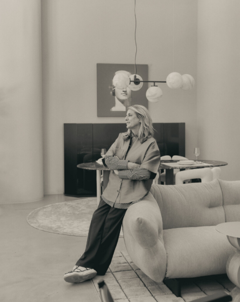

Function Meets Aesthetic
01

Patricia Urquiola is a Spanish architect and industrial designer born in 1961 in Oviedo, Spain. She studied architecture in Madrid and later graduated from the Politecnico di Milano under Achille Castiglioni.
After working with designers like Vico Magistretti, she opened her own studio in Milan in 2001. Her work spans furniture, interiors, architecture, and product design.
Known for blending functionality with emotion, her designs are often playful, soft, and practical—focused on how people actually live.